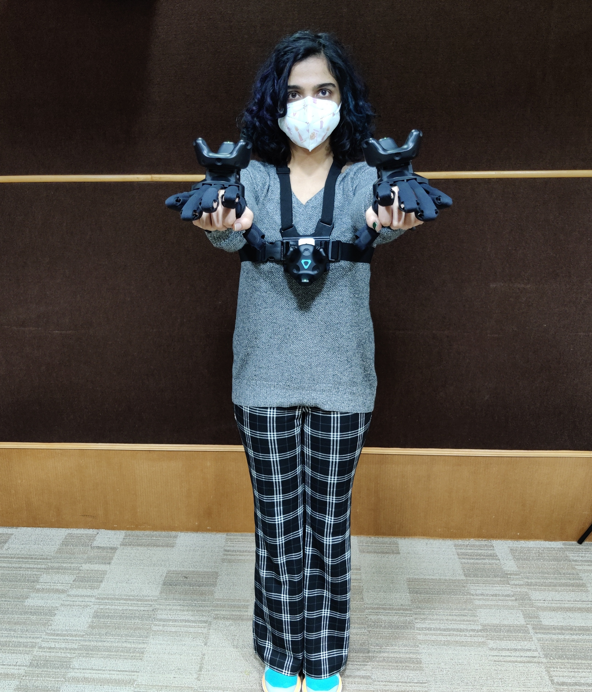

Setting up Asha
- Power Asha on and make sure all the motors in her hands are set to the zero position.
- Using Teamviewer connect to Asha’s NUC using her static IP when connected to an external network.
- Open a terminal on Asha’s NUC and type in
$hrsdk start --local_ip <ASHA’S IP>
<ASHA’S IP> is her set static IP.
For example if her IP on eno1 is 192.168.0.110, then command would be $hrsdk start --local_ip 192.168.0.110 - To verify if everything is working as expected, go to
<ASHA’S IP>:8000/#/motorsusing a web browser on any device on the same network or on the NUC using teamviewer.
Setting up Volta
- Power on the volta and wait for the LEDs to start blinking blue.
- SSH into the using the command $ssh volta-4@<VOLTA’S IP> with password: Botsync@123
- Using nano open the bashrc file the command is $nano ~/.bashrc Make sure the IP for Asha and Volta have been set correctly here
- Run $ros_core_asha
- Run $roslaunch volta_base on_boot.launch The LED strips on the side of the Volta will now be a solid green colour
Setting up Jetson AGX
- Power on the Xavier and make sure both the dynamixel head mount and the Zed mini camera are connected to it
- SSH into the Xavier using the command $ssh ashagpu@<XAVIER’S IP> Password: ashagpu
- For the ZED
- Navigate to the folder with the built zed files by running $cd zed-examples/camera streaming/sender/cpp/build
- Run ./ZED_Streaming_Sender If there is an error, then disconnect and reconnect ZED's USB cable from the AGX.
- For the Dynamixel
- Create a new ssh session using the same command as step 2.
- Run $cd Hand_Tracking_dev/src/asha_head/scripts
- Run $python2 dynamixel_interface.py If the screen shows a red error message, adjust the dynamixel position in the head mount till it becomes stiff and the error message stops printing.
Setting up the Windows PC
- SteamVR
- Start the SteamVR app on the desktop
- Open menu and select Room Setup. Follow instructions on the screen to set up the VR play area. Note: Ensure all the trackers are switched off during this step.
- Switch on all the trackers. Confirm that all the trackers, the headset and the base stations are recognized and tracked.
- Running the Zed camera stream on the VR headset
- Click on the Zed Streaming unity app to start the streaming.
- Running code for Hand Tracking and Haptic gloves
- Open
avatar/VR/ws_server.pywith VS Code. - Run ws_server.py without debugging (Shortcut is Ctrl+F5).
- Open
avatar/HapticGloves/src/ws_glove.pywith VS code. - Ensure that request_URL on line 22 is the IP of the Linux PC
- Run ws_glove.py without debugging (Shortcut is Ctrl+F5).
- Test finger curls and haptic feedback. If necessary, calibrate the gloves as mentioned in Initial Setup.
Setting up the Linux PC
- Ensure that the correct IPs have set in all the required locations.
- Run $tmuxinator start asha from the avatar directory
- Run $tmuxinator start audio from the avatar directory
Back to the Windows PC
- Running the Expression Tracking code
- Open
Expression Tracking/expr_trck.slnwith Visual Studio. - On line 251, change the uri to the IP of the Linux PC
- Click play on the Local Windows Debugger
- Once the script starts executing, enter 1+Enter to initialize the eye and lip engines. Enter 2+Enter to start sending the expression data. Enter Ctrl+C to stop sending data.
- Test eye blinks. If the frequency is too fast or the eye movements are jittery, calibrate the eyes as mentioned in the Initial Setup.
Calibrating the IK
- Wait for tmuxinator code to complete the initialisation steps on the Linux PC
- On a web browser on the Linux PC, go to localhost:5000/
- Follow the calibration steps below and instruct the operator to hold the appropriate poses while the position is being recorded.
- Click on start calibration
- Record operator position with the operator's arms wide apart
- Record operator position with the operator's arms to the front
- Record operator position with the operator's arms to the side
- Instruct the operator to go to Asha's zero position
- Click on Start tracking
- See calibration data and verify the values
- If the calibration data looks good, save the calibration data. If not, repeat calibration procedure.
- To load calibration data, shift to the Hand Tracking Tab on the tmux screen.
- Press Ctrl+C to stop the current tracking.
- Enter $hand_tracking_with_calib <calibration_filename>.yaml




Example: $hand_tracking_with_calib rushali_calib.yaml